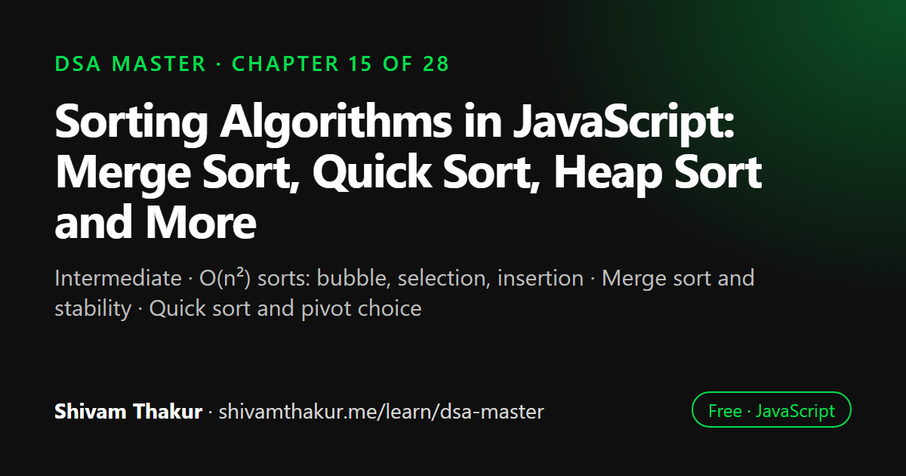

Chapter 15 of 28 · Intermediate
Sorting Algorithms in JavaScript: Merge Sort, Quick Sort, Heap Sort and More
The Sorting Algorithms Masterclass

Sorting algorithms put elements in order, and they differ in speed, memory use and stability. This chapter implements bubble, selection and insertion sort, then merge sort, quick sort and heap sort, and finally counting and radix sort, which beat the O(n log n) limit for comparison sorts. It also explains how JavaScript's Array.prototype.sort works under the hood.
In this chapter you will learn
- O(n²) sorts: bubble, selection, insertion
- Merge sort and stability
- Quick sort and pivot choice
- Heap sort
- Counting and radix sort
- How Array.prototype.sort works (TimSort)
15.0 Why Sorting Deserves Its Own Masterclass
Sorting looks "solved" the moment you learn array.sort() exists — so why does an entire masterclass chapter exist for something one method call handles? Because sorting is the single richest teaching ground in all of DSA for comparing algorithmic strategies head-to-head on identical inputs and identical goals. Every technique in this book so far — divide and conquer (recursion, Chapter 2), heaps (Chapter 9), and the complexity analysis rigor of Chapter 1 — converges here, letting us finally answer, with full rigor: why is O(n log n) the practical ceiling for comparison-based sorting, and what do you gain by giving up the "comparison-based" assumption entirely?
15.1 The O(n²) Family: Simple, Intuitive, Rarely Optimal
15.1.1 Bubble Sort
Definition: Bubble Sort repeatedly steps through the array, comparing adjacent elements and swapping them if they're in the wrong order, causing larger elements to "bubble up" toward the end with each full pass.
function bubbleSort(arr) {
const a = [...arr]; // avoid mutating the caller's array (a good default habit)
const n = a.length;
for (let i = 0; i < n - 1; i++) {
let swapped = false;
for (let j = 0; j < n - 1 - i; j++) {
// "n - 1 - i": the last i elements are ALREADY sorted (bubbled to the end), skip them!
if (a[j] > a[j + 1]) {
[a[j], a[j + 1]] = [a[j + 1], a[j]];
swapped = true;
}
}
if (!swapped) break; // OPTIMIZATION: no swaps means the array is already sorted — stop early!
}
return a;
}Dry Run
arr = [5, 2, 4, 1]
Pass 1 (i=0, j goes 0 to 2):
j=0: 5>2 -> swap -> [2,5,4,1]
j=1: 5>4 -> swap -> [2,4,5,1]
j=2: 5>1 -> swap -> [2,4,1,5]
swapped=true. Largest element (5) has "bubbled" to the very end.
Pass 2 (i=1, j goes 0 to 1):
j=0: 2>4? No.
j=1: 4>1 -> swap -> [2,1,4,5]
swapped=true.
Pass 3 (i=2, j goes 0 to 0):
j=0: 2>1 -> swap -> [1,2,4,5]
swapped=true.
Pass 4 (i=3, but loop condition i < n-1=3 fails) -> DONE
Final: [1, 2, 4, 5]- Time: O(n²) average and worst case; O(n) best case (already sorted, thanks to the early-exit optimization — one pass finds zero swaps and stops immediately).
- Space: O(1) extra (in-place, ignoring the defensive copy) — a genuine advantage over some O(n log n) alternatives.
- Stable: Yes (equal elements never get swapped past each other, since the swap condition is strictly
>, not>=).
15.1.2 Selection Sort
Definition: Selection Sort repeatedly finds the minimum element in the unsorted portion of the array and swaps it into its correct sorted position.
function selectionSort(arr) {
const a = [...arr];
const n = a.length;
for (let i = 0; i < n - 1; i++) {
let minIndex = i;
for (let j = i + 1; j < n; j++) {
if (a[j] < a[minIndex]) {
minIndex = j;
}
}
if (minIndex !== i) {
[a[i], a[minIndex]] = [a[minIndex], a[i]];
}
}
return a;
}Dry Run
arr = [5, 2, 4, 1]
i=0: find min in [5,2,4,1] (indices 0-3) -> min is 1 at index 3. Swap a[0],a[3] -> [1,2,4,5]
i=1: find min in [2,4,5] (indices 1-3) -> min is 2 at index 1 (already there!). No swap needed.
i=2: find min in [4,5] (indices 2-3) -> min is 4 at index 2 (already there!). No swap needed.
Final: [1, 2, 4, 5]- Time: O(n²) in ALL cases — best, average, and worst — because the inner loop always scans the entire remaining unsorted portion to find the minimum, regardless of how "close to sorted" the input already is. This is a genuinely important contrast with Bubble Sort's best-case O(n).
- Space: O(1) extra.
- Stable: No, in the naive implementation shown (swapping a distant minimum into position
ican jump it past equal elements it was originally behind) — though a stability-preserving variant exists (shifting instead of swapping), at the cost of more operations per step.
15.1.3 Insertion Sort
Definition: Insertion Sort builds the sorted array one element at a time, taking each new element and inserting it into its correct position within the already-sorted portion built so far.
function insertionSort(arr) {
const a = [...arr];
for (let i = 1; i < a.length; i++) {
const current = a[i];
let j = i - 1;
while (j >= 0 && a[j] > current) {
a[j + 1] = a[j]; // shift larger elements one position to the right
j--;
}
a[j + 1] = current; // insert into the now-vacated correct position
}
return a;
}Dry Run
arr = [5, 2, 4, 1]
i=1: current=2. j=0: a[0]=5>2 -> shift: a[1]=5 -> [5,5,4,1]. j=-1: stop. a[0]=2 -> [2,5,4,1]
i=2: current=4. j=1: a[1]=5>4 -> shift: a[2]=5 -> [2,5,5,1]. j=0: a[0]=2>4? No, stop. a[1]=4 -> [2,4,5,1]
i=3: current=1. j=2: a[2]=5>1 -> shift: a[3]=5 -> [2,4,5,5]. j=1: a[1]=4>1 -> shift: a[2]=4 -> [2,4,4,5]
j=0: a[0]=2>1 -> shift: a[1]=2 -> [2,2,4,5]. j=-1: stop. a[0]=1 -> [1,2,4,5]
Final: [1, 2, 4, 5]- Time: O(n²) average/worst case; O(n) best case (already sorted — the
whileloop's condition fails immediately every time, sincea[j] > currentis never true). - Space: O(1) extra.
- Stable: Yes (the shift condition is strict
>, never moving an element past an equal one).
15.2 Merge Sort: Divide and Conquer, Fully Realized
Definition: Merge Sort recursively splits the array in half until reaching single-element (trivially sorted) sub-arrays, then merges pairs of sorted sub-arrays back together in sorted order.
Direct Callback to Chapter 2 and Chapter 5
This is divide-and-conquer recursion (Chapter 2) applied directly to sorting, and the "merge" step is exactly Chapter 5's mergeTwoSortedLists function (section 5.5.5), just operating on arrays instead of linked lists.
function mergeSort(arr) {
if (arr.length <= 1) return arr; // BASE CASE: a single element is trivially "sorted"
const mid = Math.floor(arr.length / 2);
const left = mergeSort(arr.slice(0, mid)); // RECURSIVE CASE: sort the left half
const right = mergeSort(arr.slice(mid)); // RECURSIVE CASE: sort the right half
return merge(left, right);
}
function merge(left, right) {
const result = [];
let i = 0, j = 0;
while (i < left.length && j < right.length) {
if (left[i] <= right[j]) { // <= (not <) is what makes this STABLE — ties favor the LEFT array
result.push(left[i]);
i++;
} else {
result.push(right[j]);
j++;
}
}
// Attach whichever side has leftover elements (only one of these loops actually runs anything)
while (i < left.length) result.push(left[i++]);
while (j < right.length) result.push(right[j++]);
return result;
}ASCII Visualization: The Full Divide-and-Conquer Tree
[5, 2, 4, 1, 8, 3]
/ \
[5, 2, 4] [1, 8, 3]
/ \ / \
[5, 2] [4] [1, 8] [3]
/ \ / \
[5] [2] [1] [8]
MERGE BACK UP:
[2, 5] [4] [1, 8] [3]
\ / \ /
[2, 4, 5] [1, 3, 8]
\ /
\ /
[1, 2, 3, 4, 5, 8]
Each MERGE step combines two already-sorted halves in O(n) time (linear scan,
just like Chapter 5's linked list merge). There are O(log n) LEVELS of splitting,
and each level does O(n) total merge work across all its pairs -> O(n log n) total.15.3 Quick Sort: Divide and Conquer, With a Catch
Definition: Quick Sort selects a pivot element, partitions the array so all elements smaller than the pivot come before it and all larger elements come after, then recursively sorts each partition.
function quickSort(arr, low = 0, high = arr.length - 1) {
if (low < high) {
const pivotIndex = partition(arr, low, high);
quickSort(arr, low, pivotIndex - 1); // recursively sort LEFT of the pivot
quickSort(arr, pivotIndex + 1, high); // recursively sort RIGHT of the pivot
}
return arr;
}
function partition(arr, low, high) {
const pivot = arr[high]; // choosing the LAST element as the pivot (a common, simple choice)
let i = low - 1; // tracks the boundary of "elements confirmed smaller than pivot"
for (let j = low; j < high; j++) {
if (arr[j] < pivot) {
i++;
[arr[i], arr[j]] = [arr[j], arr[i]];
}
}
[arr[i + 1], arr[high]] = [arr[high], arr[i + 1]]; // place the pivot in its final sorted position
return i + 1; // the pivot's final index
}Dry Run: Partitioning [5, 2, 8, 1, 9, 3] (pivot = 3, the last element)
arr = [5, 2, 8, 1, 9, 3], low=0, high=5, pivot=arr[5]=3
i = -1
j=0: arr[0]=5 < 3? No.
j=1: arr[1]=2 < 3? YES. i=0. swap(arr[0],arr[1]) -> [2,5,8,1,9,3]
j=2: arr[2]=8 < 3? No.
j=3: arr[3]=1 < 3? YES. i=1. swap(arr[1],arr[3]) -> [2,1,8,5,9,3]
j=4: arr[4]=9 < 3? No.
Final step: swap(arr[i+1]=arr[2], arr[high]=arr[5]) -> [2,1,3,5,9,8]
Return pivotIndex = 2
Result: everything before index 2 (values 2,1) is < 3. Everything after (5,9,8) is >= 3.
The pivot (3) is now in its CORRECT FINAL SORTED POSITION.15.4 Heap Sort: Cashing In Chapter 9 Fully
Definition: Heap Sort builds a max-heap (Chapter 9) from the array, then repeatedly extracts the maximum element and places it at the end of the shrinking unsorted region.
function heapSort(arr) {
const a = [...arr];
const n = a.length;
// Step 1: build a max-heap in place (bottom-up heapify — O(n), per Chapter 9!)
for (let i = Math.floor(n / 2) - 1; i >= 0; i--) {
siftDown(a, i, n);
}
// Step 2: repeatedly extract the max (swap to the end, shrink the heap, sift down)
for (let end = n - 1; end > 0; end--) {
[a[0], a[end]] = [a[end], a[0]]; // move current max to its final sorted position
siftDown(a, 0, end); // restore heap property on the SHRUNK heap (size = end, not n)
}
return a;
}
function siftDown(a, index, heapSize) {
while (true) {
const left = 2 * index + 1;
const right = 2 * index + 2;
let largest = index;
if (left < heapSize && a[left] > a[largest]) largest = left;
if (right < heapSize && a[right] > a[largest]) largest = right;
if (largest === index) break;
[a[index], a[largest]] = [a[largest], a[index]];
index = largest;
}
}15.5 Non-Comparison-Based Sorts: Breaking the O(n log n) "Ceiling"
15.5.1 Counting Sort
Definition: Counting Sort works by counting the occurrences of each distinct value, then using those counts to place each element directly into its correct sorted position — no comparisons at all.
function countingSort(arr, maxValue) {
const counts = new Array(maxValue + 1).fill(0);
for (const num of arr) {
counts[num]++; // tally how many times each value appears
}
const result = [];
for (let value = 0; value <= maxValue; value++) {
for (let i = 0; i < counts[value]; i++) {
result.push(value); // place `value` exactly `counts[value]` times, in order
}
}
return result;
}
console.log(countingSort([4, 2, 2, 8, 3, 3, 1], 8)); // [1, 2, 2, 3, 3, 4, 8]Dry Run
arr = [4, 2, 2, 8, 3, 3, 1], maxValue = 8
counts = [0,0,0,0,0,0,0,0,0] (indices 0-8)
Tally: 4->counts[4]++, 2->counts[2]++, 2->counts[2]++, 8->counts[8]++,
3->counts[3]++, 3->counts[3]++, 1->counts[1]++
counts = [0,1,2,2,1,0,0,0,1]
0 1 2 3 4 5 6 7 8 <- these are the VALUES being counted
Reconstruct: value 0 appears 0 times (skip), value 1 appears 1 time -> push 1
value 2 appears 2 times -> push 2, push 2. value 3 appears 2 times -> push 3, push 3.
value 4 appears 1 time -> push 4. values 5,6,7 appear 0 times (skip). value 8 appears 1 time -> push 8.
Result: [1, 2, 2, 3, 3, 4, 8] ✓ correctly sorted!15.5.2 Radix Sort
Definition: Radix Sort sorts numbers digit by digit (starting from the least significant digit), using a stable sort (typically Counting Sort) as a subroutine for each digit position.
function radixSort(arr) {
const a = [...arr];
const maxNum = Math.max(...a);
const maxDigits = maxNum.toString().length;
for (let digitPosition = 0; digitPosition < maxDigits; digitPosition++) {
a.sort((x, y) => getDigit(x, digitPosition) - getDigit(y, digitPosition));
// NOTE: for a TRUE O(n+k) radix sort, this should be a stable counting-sort pass,
// not Array.prototype.sort() (which is O(n log n) — used here ONLY for conceptual
// clarity of "sort by this digit"; a real implementation must use counting sort
// per digit to preserve the overall O(d*(n+k)) complexity claimed below).
}
return a;
}
function getDigit(num, position) {
return Math.floor(num / Math.pow(10, position)) % 10;
}15.6 JavaScript's Actual Array.prototype.sort(): What's Really Under the Hood
15.7 Edge Cases and Gotchas Checklist for Sorting Problems
- Empty array and single-element array. Every algorithm in this chapter should handle these trivially and correctly.
- Already-sorted or reverse-sorted input. Specifically stress-tests Quick Sort's worst-case vulnerability (naive pivot choice) and showcases Bubble/Insertion Sort's best-case optimization.
- All-duplicate values. Verify stability claims explicitly — do equal elements retain relative order?
Array.prototype.sort()'s default comparator is LEXICOGRAPHIC (string-based), not numeric! This is an extremely common, real-world JavaScript bug:[10, 1, 2].sort()produces[1, 10, 2](sorted as strings: "1" < "10" < "2"), **not**[1, 2, 10]. Always pass an explicit comparator ((a, b) => a - b) for numeric sorting.- Counting/Radix Sort with negative numbers — the simple versions shown assume non-negative integers; handling negatives requires an offset adjustment or separate handling, worth mentioning if the input isn't guaranteed non-negative.
- In-place vs. new-array mutation contracts — always clarify (or defensively copy, as this chapter's examples do) whether a sort function should mutate its input or return a new array, since
Array.prototype.sort()itself mutates in place, a common source of surprise bugs.
15.8 Chapter Summary
This chapter delivered the full masterclass promised at its opening: a rigorous, comparative tour of sorting strategies, anchored throughout by direct callbacks to nearly every prior chapter in this book. We covered the O(n²) family — Bubble Sort (stable, with a genuine O(n) best-case early-exit optimization), Selection Sort (unstable in its naive form, and critically, with no best-case exception, always O(n²) regardless of input order), and Insertion Sort (stable, O(n) best-case, and genuinely practically valuable as a hybrid-algorithm building block for small/nearly-sorted sub-arrays, not merely an academic stepping stone).
We then built Merge Sort as divide-and-conquer recursion (Chapter 2) fully realized, its merge step being a direct, literal reuse of Chapter 5's sorted-linked-list-merge logic applied to arrays — earning an unconditional O(n log n) guarantee across best, average, and worst cases, at the real cost of O(n) auxiliary space, with stability guaranteed by a careful <= tie-breaking choice. We contrasted this against Quick Sort, whose in-place partitioning earns it O(log n) space and typically faster real-world performance via better cache locality, at the cost of a genuine O(n²) worst case on adversarial (often simply already-sorted) input with naive pivot selection — mitigated, though not eliminated in the absolute theoretical sense, by randomized pivot choice. We closed the comparison-based algorithms with Heap Sort, cashing in Chapter 9's heap machinery fully, earning the best of both prior worlds' guarantees — O(n log n) worst-case and O(1) space — at the practical cost of worse cache locality than Quick Sort.
We then proved, via the information-theoretic decision-tree argument, why O(n log n) is a genuine mathematical ceiling for any algorithm that sorts purely by pairwise comparison — motivating the escape hatch of non-comparison-based sorts. Counting Sort achieves O(n+k) by exploiting known value-range structure directly (with the crucial, always-worth-stating caveat that this only wins when k isn't dramatically larger than n), and Radix Sort achieves O(d(n+k)) by applying a stable per-digit sort repeatedly from least to most significant digit — a technique whose correctness rests entirely on that stability requirement, since each pass must preserve the fine-grained ordering established by every prior pass. We closed by demystifying JavaScript's actual Array.prototype.sort() — TimSort, a hybrid of Merge Sort and Insertion Sort that detects and extends existing sorted "runs" for adaptive near-O(n) performance on partially-sorted real-world data, while retaining Merge Sort's O(n log n) worst-case guarantee and ES2019-mandated stability — and flagged the single most common real-world JavaScript sorting bug: the default comparator is lexicographic, not numeric, silently corrupting naive numeric sorts.
15.9 Revision Notes
- Bubble Sort: O(n) best (early exit), O(n²) otherwise, stable.
- Selection Sort: O(n²) in ALL cases (no best-case exception — a key contrast with Bubble/Insertion Sort), unstable in naive form.
- Insertion Sort: O(n) best, O(n²) otherwise, stable, genuinely used as a hybrid-algorithm building block for small/nearly-sorted data.
- Merge Sort: O(n log n) unconditionally (best=avg=worst), O(n) space, stable — the merge step directly reuses Chapter 5's sorted-list-merge logic.
- Quick Sort: O(n log n) average/best, O(n²) worst (naive pivot on sorted/adversarial input), O(log n) space, unstable, typically fastest in practice due to cache locality — mitigate worst case via randomized/median-of-three pivot selection.
- Heap Sort: O(n log n) unconditionally, O(1) space, unstable — combines Merge Sort's worst-case guarantee with Quick Sort's low space, at some real-world cache-locality cost.
- O(n log n) is a proven mathematical ceiling for comparison-based sorting (information-theoretic decision-tree argument, log₂(n!) ≈ n log n).
- Counting Sort (O(n+k)) and Radix Sort (O(d(n+k))) escape this ceiling by exploiting known value structure instead of comparisons — Counting Sort needs k not much larger than n; Radix Sort's correctness depends entirely on using a STABLE per-digit sort, least-significant-digit first.
- JavaScript's
Array.prototype.sort()uses TimSort (Merge Sort + Insertion Sort hybrid), adaptive to existing sorted runs (near-O(n) on partially-sorted data), O(n log n) worst case, stable since ES2019 — and its default comparator is lexicographic, not numeric, a common real-world bug source.
15.10 Mind Map (ASCII)
SORTING MASTERCLASS
|
+------------------+------------+------------+----------------------+
| | | |
O(n^2) FAMILY O(n log n) FAMILY THE O(n log n) NON-COMPARISON
(simple, (divide & conquer, CEILING PROOF SORTS (escape
intuitive) Ch.2/Ch.5/Ch.9 | the ceiling)
| callbacks) log2(n!) ~ n log n |
Bubble: O(n) | (information-theoretic Counting Sort:
best (early exit), +---+---+---+ decision tree limit O(n+k), needs
stable | | | for PURE comparison k not >> n
| Merge Quick Heap sorts) |
Selection: Sort Sort Sort Radix Sort:
O(n^2) ALWAYS | | | O(d(n+k)),
(no best case!) O(nlogn) O(nlogn) O(nlogn) MUST use STABLE
unstable ALWAYS avg/best, ALWAYS per-digit sort,
| O(n) O(n^2) O(1) least-significant
Insertion: O(n) space worst! space digit FIRST
best, stable, STABLE O(logn) unstable
REAL hybrid- space,
algorithm value UNSTABLE
(TimSort uses (mitigate via
this for small randomized
runs!) pivot)
|
JS Array.sort() = TimSort
(Merge+Insertion hybrid,
detects/extends sorted "runs",
adaptive ~O(n) on partial data,
O(nlogn) worst, STABLE since ES2019)
WARNING: default comparator is
LEXICOGRAPHIC not numeric!15.11 Cheat Sheet
COMPLETE SORTING COMPARISON TABLE
=====================================
Algorithm Best Average Worst Space Stable
Bubble Sort O(n) O(n^2) O(n^2) O(1) Yes
Selection Sort O(n^2) O(n^2) O(n^2) O(1) No
Insertion Sort O(n) O(n^2) O(n^2) O(1) Yes
Merge Sort O(nlogn) O(nlogn) O(nlogn) O(n) Yes
Quick Sort O(nlogn) O(nlogn) O(n^2) O(logn) No
Heap Sort O(nlogn) O(nlogn) O(nlogn) O(1) No
Counting Sort O(n+k) O(n+k) O(n+k) O(n+k) Yes*
Radix Sort O(d(n+k)) O(d(n+k)) O(d(n+k)) O(n+k) Yes
JS sort()(TimSort) O(n) O(nlogn) O(nlogn) O(n) Yes (ES2019+)
DECISION GUIDE
=================
Need guaranteed worst-case + stability -> Merge Sort
Need best average speed, space isn't critical -> Quick Sort (randomized pivot!)
Need O(nlogn) guarantee + O(1) space -> Heap Sort
Values are small-range integers (k ~ n) -> Counting Sort
Fixed-width numbers/strings, want near-O(n) -> Radix Sort
Just use the language default -> Array.prototype.sort() (TimSort)
CRITICAL JS GOTCHA
=====================
[10, 1, 2].sort() -> [1, 10, 2] WRONG for numbers! (lexicographic default)
[10, 1, 2].sort((a,b)=>a-b) -> [1, 2, 10] CORRECT (explicit numeric comparator)
STABILITY CHECK
==================
Stable: Bubble, Insertion, Merge, Counting (careful impl), Radix, TimSort
Unstable: Selection (naive), Quick Sort, Heap Sort15.12 Key Takeaways
- Selection Sort is O(n²) unconditionally, with no best-case exception — a key, frequently-tested contrast with Bubble/Insertion Sort's O(n) best case.
- Merge Sort guarantees O(n log n) worst-case and stability at O(n) space cost; Quick Sort trades worst-case safety for typically-faster, lower-memory, cache-friendly performance.
- Heap Sort combines O(n log n) worst-case guarantee with O(1) space, at some real-world cache-locality cost versus Quick Sort.
- O(n log n) is a proven mathematical ceiling for comparison-based sorting — non-comparison sorts (Counting, Radix) escape it by exploiting known value structure, not by being "cleverer" comparisons.
- JavaScript's
Array.prototype.sort()is TimSort — adaptive, stable, O(n log n) worst-case — but its default comparator is lexicographic, a critical, extremely common real-world bug source for numeric data.
15.13 20 Multiple Choice Questions
Tap an answer to check it. Your score updates as you go.
Score: 0 / 0 answered (20 questions)
What is Bubble Sort's best-case time complexity, and why?
What is Selection Sort's best-case time complexity?
Why does Selection Sort have no best-case exception unlike Bubble/Insertion Sort?
What does it mean for a sorting algorithm to be "stable"?
What is the time complexity of Merge Sort in ALL cases (best, average, worst)?
What is the space complexity of standard Merge Sort?
What causes Quick Sort's worst-case O(n²) behavior?
What is a common mitigation for Quick Sort's worst-case vulnerability?
What is Quick Sort's typical space complexity?
What is Heap Sort's space complexity?
What combination of guarantees does Heap Sort uniquely offer among the O(n log n) algorithms discussed?
According to the information-theoretic argument in this chapter, why can't comparison-based sorting beat O(n log n) in the worst case?
What is Counting Sort's time complexity?
What critical limitation must be stated when proposing Counting Sort?
In Radix Sort, why must the per-digit sort be stable?
In Radix Sort, which digit is processed first?
What algorithm does modern JavaScript's
Array.prototype.sort()actually use?What is TimSort's key adaptive advantage on partially-sorted real-world data?
What is the default behavior of
Array.prototype.sort()without an explicit comparator, and why is this a common bug source?Since which ECMAScript version has
Array.prototype.sort()been spec-guaranteed to be stable?
Show the answer key
1-b, 2-b, 3-b, 4-b, 5-b, 6-c, 7-b, 8-b, 9-b, 10-c, 11-a, 12-b, 13-b, 14-b, 15-b, 16-b, 17-b, 18-b, 19-b, 20-c
15.14 20 Coding Problems
Easy
- Implement Bubble Sort with the early-exit optimization, from memory.
- Implement Selection Sort, from memory, and verify it always performs the same number of comparisons regardless of input order.
- Implement Insertion Sort, from memory, and test it on an already-sorted array to confirm O(n) behavior (count comparisons).
- Write a function to check if a given array is sorted (ascending), a useful helper for testing every sort in this chapter.
- Write a function to verify that two arrays contain the same multiset of elements (useful for verifying a sort didn't lose/duplicate any elements).
Medium
- Implement Merge Sort from memory (section 15.2), including the
mergehelper, and verify its stability using an array of objects with a "key" and "originalIndex" field. - Implement Quick Sort with the standard last-element pivot, then implement the randomized pivot variant, and compare their performance on an already-sorted large array.
- Implement Heap Sort from memory (section 15.4), reusing the
siftDownlogic pattern from Chapter 9. - Implement Counting Sort from memory (section 15.5.1), and test it on an array with a small known value range.
- Implement a STABLE Counting Sort (using the cumulative-sum placement technique alluded to in section 15.5.1), and verify stability explicitly.
Hard
- Implement Radix Sort from memory (section 15.5.2), using your stable Counting Sort from problem 10 as the per-digit sorting subroutine (not
Array.prototype.sort()), and verify the full O(d(n+k)) claim empirically. - Given an array of intervals, sort them by start time, and then merge overlapping intervals — combining a custom comparator sort with an O(n) merge pass.
- Implement an in-place Quick Sort variant that correctly handles arrays with many duplicate values efficiently (the "Dutch National Flag" three-way partitioning scheme from Chapter 3's coding problems, applied here as a genuine Quick Sort optimization).
- Given a very large array that doesn't fit in memory, describe (with a smaller simulated version) an external merge sort approach: sort chunks that fit in memory, write them to separate "files" (arrays, for simulation), then merge them using a k-way merge (a direct extension of Chapter 9's heap-based k-way merge techniques).
- Implement a function that sorts an array of strings by length first, then alphabetically for ties, verifying this compound sort works correctly with both a stable custom implementation and
Array.prototype.sort()'s native stability guarantee.
Interview Level
- (Google-level) Given a massive log file of timestamped events that arrive mostly in order but with occasional out-of-order entries (simulate this), implement or reason about why TimSort's run-detection would make
Array.prototype.sort()genuinely fast on this specific kind of real-world data. - (Amazon-level) Given a list of products with prices (integers in a known small range, e.g., $0-$1000), use Counting Sort to sort by price in better-than-O(n log n) time, and discuss in comments why this beats a general comparison sort for this specific catalog structure.
- (Microsoft-level) Implement a sorting function for a list of employee records that must sort by department (alphabetically) and then by hire date within each department, relying on a stable sort's guarantee to achieve this via two sequential sort passes (sort by hire date first, then stably sort by department).
- (Meta-level) Given a stream of user IDs (fixed-width integers) that need to be sorted at massive scale, implement Radix Sort and analyze in comments why it outperforms a comparison-based sort for this specific fixed-width-integer use case, including the crossover point where d(n+k) genuinely beats n log n.
- (Netflix-level) Design a video-recommendation ranking system that needs to sort millions of videos by a computed relevance score (floating point) while preserving upload-order as a tiebreaker for equal scores; implement this using a stable sort and discuss in comments why stability is a genuine product requirement here, not just an academic nicety.
15.15 5 Interview Questions
- "Implement Quick Sort, and tell me its worst-case time complexity and how to mitigate it." (Tests both implementation and the pivot-choice vulnerability/randomization mitigation.)
- "Compare Merge Sort and Quick Sort — when would you choose one over the other?" (Tests the complete space/time/stability trade-off table.)
- "Why can't comparison-based sorting algorithms beat O(n log n) in the worst case?" (Tests the information-theoretic decision-tree argument specifically.)
- "How would you sort an array of integers known to be in a small range, faster than O(n log n)?" (Tests Counting Sort knowledge and its k-not-much-larger-than-n caveat.)
- "What sorting algorithm does JavaScript actually use under the hood, and why does that choice make sense?" (Tests specific, accurate TimSort knowledge and its adaptive/stability rationale.)
15.16 3 Real Projects
- Complete Sorting Algorithm Library: Implement every algorithm from this chapter (Bubble, Selection, Insertion, Merge, Quick with randomized pivot, Heap, Counting, Radix) in a single module, with a shared test harness verifying correctness and stability (using tagged objects) across randomized inputs of varying size and "sortedness."
- Sorting Algorithm Race Visualizer: Build a Node.js CLI tool that runs every algorithm from this chapter against the same generated inputs (random, nearly-sorted, reverse-sorted, many-duplicates) at increasing sizes, timing each with
performance.now(), and printing a comparison table — a direct empirical validation of this chapter's entire complexity table. - Custom Comparator Sorting Toolkit: Build a small library of common real-world sorting needs (sort employee records by department then hire date, sort products by price range then name, sort log entries by timestamp with stable tie-breaking) demonstrating practical, compound sort-key techniques built on
Array.prototype.sort()'s stability guarantee.
15.17 Further Reading
- Donald Knuth, The Art of Computer Programming, Volume 3: Sorting and Searching — the definitive, exhaustive historical and mathematical treatment of this entire chapter's subject matter.
- Tim Peters' original TimSort specification and implementation notes (originally written for Python), for the real engineering detail behind JavaScript's own adopted algorithm.
- Search "V8 blog Array.prototype.sort" for the V8 team's own account of their TimSort adoption and the ES2019 stability specification change.
- MDN Web Docs: "Array.prototype.sort()" for the exact, current specification-level behavior guarantees.
Sorting Algorithms in JavaScript: frequently asked questions
Which sorting algorithm is the fastest?
No single algorithm is fastest everywhere. Quick sort is usually fastest in practice, merge sort guarantees O(n log n) and is stable, insertion sort is fastest on small or nearly sorted arrays, and counting or radix sort can be O(n) for integers in a limited range.
Why does [10, 9, 1].sort() return [1, 10, 9] in JavaScript?
Without a comparator, Array.prototype.sort converts elements to strings and compares them lexicographically, so "10" comes before "9". Pass a comparator such as (a, b) => a - b to sort numbers.
What algorithm does JavaScript's Array.sort use?
V8, used by Chrome and Node.js, uses TimSort, a hybrid of merge sort and insertion sort. It is stable, adaptive to already sorted runs and O(n log n) in the worst case.
What is a stable sort?
A stable sort keeps elements with equal keys in their original relative order. Stability matters when sorting by several fields one after another, such as sorting users by name and then by city.